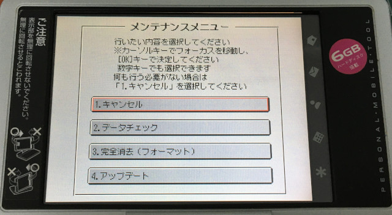
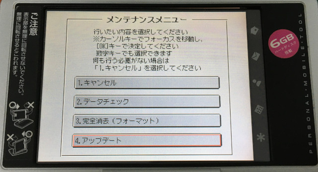
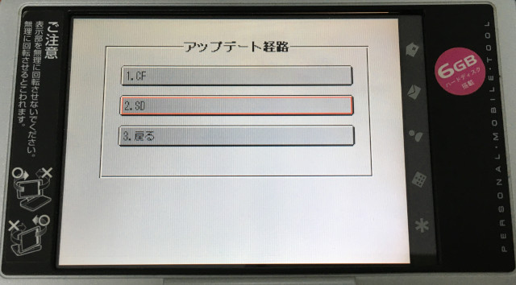
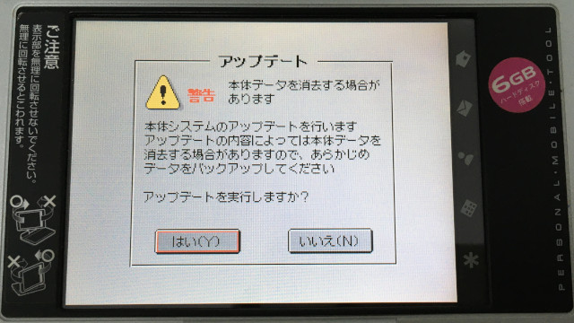
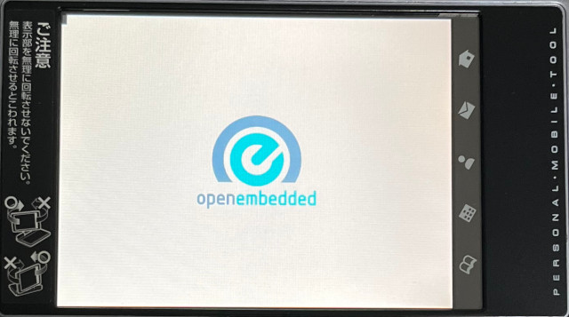
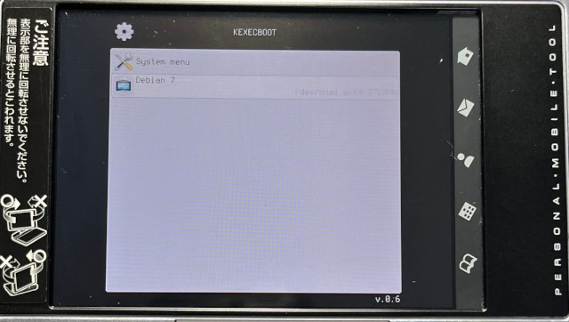
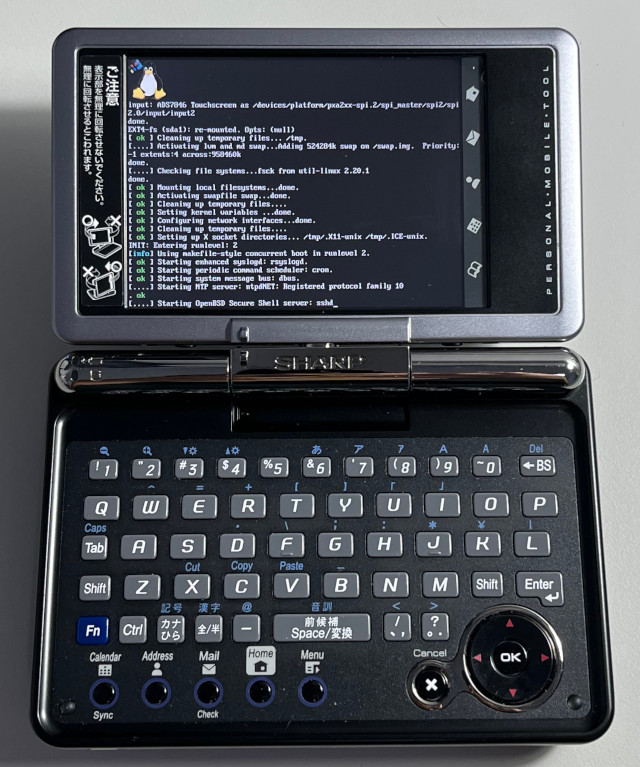

Steward
分享是一種喜悅、更是一種幸福
微電腦 - SHARP Zaurus SL-C3200 - Debian - 安裝系統
安裝開機選單：
1. 下載https://github.com/steward-fu/website/releases/download/zaurus/debian_installkit-c3x00.tar.gz
2. 格式化SDCard(1GB)成FAT16檔案系統且不要有磁碟標籤
3. 將installkit-c3x00.tar.gz解壓縮到SDCard
4. 將SDCard插入機器
5. 按住OK並且開機

6. 選擇第四個項目

7. 選擇SD

8. 選擇Y


安裝系統：
1. 下載https://github.com/steward-fu/website/releases/download/zaurus/debian_debian7_c3x00.tar.gz
2. 格式化CFCard(4GB)成ext4，格式化記得使用(-O^metadata_csum)
3. 將debian7_c3x00.tar.gz解壓縮至CFCard根目錄
4. 將CFCard插入機器
5. 透過選單啟動Debian 7
6. 帳號使用root:root


P.S. 如果CFCard是位於sdb1，記得修改boot/boot.cfg檔案
按鍵對應：
| 按鍵 | 功能 |
|---|---|
| 記號 | CTRL |
| 漢字 | ALT |
| Fn + LEFT | Terminal 1~7 |
| Fn + RIGHT | Terminal 1~7 |